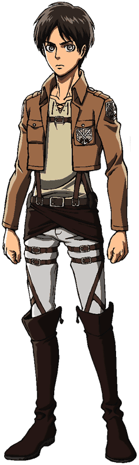
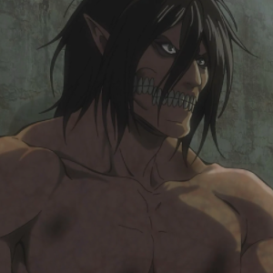
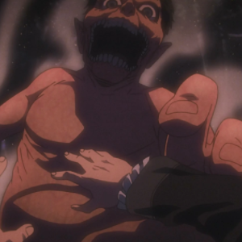
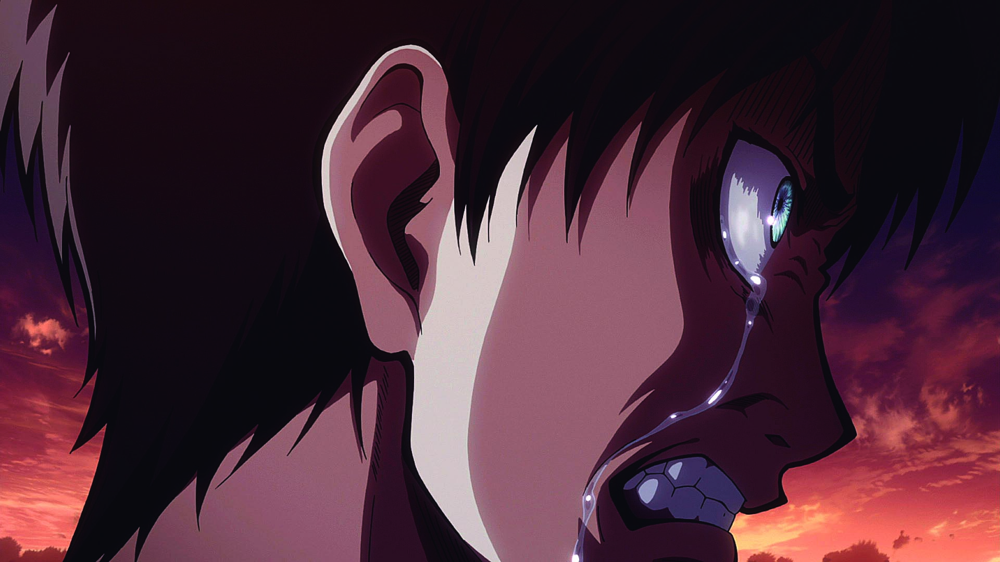
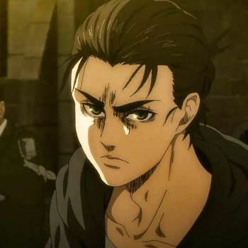

Эрен Йегер

Эрен Йегер — главный герой истории. Являлся членом Разведкорпуса. Единственный сын Гриши и Карлы Йегер, а также приёмный брат Микасы Аккерман, единокровный брат Зика Йегера, друг детства Армина Арлерта. На данный момент Эрен обладатель сил Титана—Прародителя, Титана Молота Войны и Атакующего Титана.
Родился и вырос в южном районе стены Марии в Шиганшине. Во время атаки Бронированного и Колоссального титанов в 845 году Эрен своими глазами видел, как его мать съел улыбающийся титан. Это событие вызвало у Эрена искреннюю ненависть к титанам и он поклялся уничтожить их всех.
Два года спустя он вместе с Микасой Аккерман и Армином Арлертом поступил в Кадетское училище и был зачислен в 104-й кадетский отряд. Спустя 3 года усердных тренировок и обучения Эрен занял пятое место в топе лучших выпускников. Позже Эрен, Микаса и Армин присоединились к Разведкорпусу после Битвы за Трост.
Внешность
Человек
Эрен — молодой человек среднего роста и мускулистого телосложения. У Эрена довольно длинное округлое лицо и бирюзовый цвет глаз (в манге, цвет глаз Эрена серый). В манге у него длинные волосы тёмно каштанового цвета (в аниме цвет волос Эрена — серо-коричневый), лицо Эрена слегка загорелое. После учёбы в кадетском училище физическая форма Эрена улучшилась, его мышцы стали более накаченными и крепкими, правда под мешковатой одеждой это незаметно. В 854 году Эрен отрастил волосы, они доходили ему уже до плеч.
{kind=link}
В начале истории Эрен носил коричневые брюки, жёлтую рубашку и красное пальто, а также простые туфли. За несколько лет до падения Стены Мария он носил красный шарф, который позже подарил Микасе Аккерман в день их знакомства. Во время обучения в кадетском корпусе Эрен носил стандартную форму солдата. Его гражданская одежда состоит из бежевой рубашки, идентичной той, что он носил до падения Стены Мария, белых брюк с бордовым поясом и коричневых сапог. Всегда носит на шее ключ от подвала, который получил от отца.
Ко времени когда Эрен проник в Марлию, он стал намного выше ростом. Имеет короткую бородку и усики, а также носит повязку, скрывающую его левый глаз. Ампутированная левая нога заставила Эрена ходить на костылях. Носит повязку Элдийца на левом бицепсе. После возвращения на остров, Эрен сбрил бородку и усики, а волосы стал собрирать в пучок.
Титан
Внешность титана Эрена отличается от его человеческой формы довольно сильно. Рост его титана — 15 метров. У титана Эрена длинные волосы, спадающие на плечи, удлинённые уши и длинный язык, а черты его лица довольно специфичны. Его глаза глубоко посажены, а рот довольно непривычной формы и не приспособлен для речи, хотя его титан способен издавать ужасающий рёв, означающий гнев, или же ярость. На щеках титана Эрена мало плоти, а существенную их площадь занимает челюсть, обнажённая из-за отсутствия губ. Титан Эрена имеет некоторое сходство с титаном его отца, Гриши. Сходство заключается в длине волос, мускулистости тела и удлинённых ушах.
{kind=link}
Как и другие восемь разумных Титанов, титан Эрена имеет пропорциональное и мускулистое тело, в отличии от непропорционального тела обычного титана.
Форма неразумного титана Эрена была намного меньше его формы Атакующего Титана. Его рост был около четырёх метров. Имел короткие жёсткие волосы, необычную челюсть, удлинённые уши, коренастое телосложение и большую голову с широко раскрытой челюстью.
{kind=link}
Личность
Лучше всего Эрена характеризуют такие определения, как целеустремлённость, упорство, импульсивность. С самого детства Эрен мечтал вступить в Разведкорпус и выйти за пределы стен. Он сравнивал жизнь людей в Стенах с жизнью скота в клетке.
Эрен всегда заботился о своём лучшем друге детства, Армине, прежде чем встретился с Микасой и о своей семье, ради них он был готов пожертвовать жизнью. Чаще всего это демонстрировалось в попытках Эрена защитить Армина от уличных задир, которые были значительно сильнее их обоих вместе взятых, а также, когда он пытался поднять обломки дома, упавшего на его мать в попытках спасти её жизнь во время падения Шиганшины. Эрен также способен проявлять особую жестокость в защите людей, которых он даже не знает, но которым, по его мнению очень нужна помощь. Это было продемонстрировано в тот момент, когда Эрен убил двух похитителей, зарезавших родителей Микасы. После смерти матери от рук титана, Эрен потерял контакт со своим отцом и даже разозлился на него из-за того, что тот не успел вернуться и помочь спасти Карлу. Поскольку Эрен очень дорожит своими товарищами, он впадает в ярость, когда понимает, что им грозит опасность.
Однажды Армин позвал Эрена почитать вместе книгу, в которой говорилось о чудесах внешнего мира, Эрен начал испытывать пренебрежение к жизни в стенах, сравнивая её с жизнью в клетке и к титанам, которые заставили Первого Короля возвести эти стены для защиты населения. Эрен сильно восхищается солдатами Разведкорпуса, считая их героями и желал вступить в их ряды, как только получит право на зачисление. Эрен злится, когда кто-то выражает отрицательное мнение о Разведкорпусе и его желание вступить туда вызвали разногласие с матерью, а также с Микасой. У Эрена была явная нехватка сдержанности, приводящая к неприятностям, а также заставляющая его друзей и семью беспокоиться о нём. Если Эрена спровоцировать, его гнев может перейти в бешенство и ярость. Хоть позже Эрен и стал более сдержанным, он ведёт себя ещё довольно опрометчиво и безрассудно. Из-за этого Эрен часто оказывался в опасности и его приходилось спасать.
{kind=link}
Как и многие дети, Эрен был склонен довольно определённым образом делить мир на только чёрное и только белое. С большим состраданием сопереживал другим бедным людям, таким же, как и он, считая богачей, и тех, кто презирал свободу подонками, не достойными жизни. Хотя Эрен действительно ценит человеческую жизнь. Его личное понятие справедливости заключалось в том, что тот, кто отнимает у людей свободу достоин смерти. С момента смерти матери Эрен полностью сосредоточился на ярости по отношению к титанам. Он поставил перед собой цель — уничтожить их всех до последнего. Он поклялся убить своих бывших товарищей, Райнера Брауна и Бертольда Гувера, когда те раскрыли себя как Колоссального и Бронированного титанов, устроивших падение Шиганшины в 845 году. Движимый яростью, Эрен поклялся лично убить их, сделав смерть каждого самой мучительной. Несмотря на то, что Эрен чувствовал большое раскаяние за свои ссоры с матерью, он всё же вступил в Разведкорпус. Он не боится высказывать свои намерения покинуть Стены и уничтожить всех титанов и настолько был поглощён ненавистью, что казалось, будто у Эрена напрочь отсутствует страх, таким образом Эрен заработал себе прозвище в 104-м корпусе — «Суицидальный болван». Однако, узнав из книг своего отца, что титаны — это бывшие люди, и что руководит созданием титанов некое государство, Марлия, Эрен перестал испытывать к титанам ненависть, что было показано, когда в 851 году отряд Разведкорпуса проехал мимо одного, медленно ползущего титана, Эрен не реагировал на него агрессивно, а достаточно спокойно отметил, что этот титан — элдиец.
Эрен весьма самоотверженный, настойчивый, стойкий и решительный человек. Он не терял надежды во время долгих тренировок и упражнений с УПМ, даже тогда, когда он работал с испорченным приводом, Эрен шёл до конца. Несмотря на отсутствие ярко выраженных талантов, Эрен занял пятое место в топе лучших выпускников южного 104-го кадетского корпуса. Даже когда один титан откусил Эрену ногу, а затем другой и вовсе проглотил его, тот, находясь в желудке титана, тот был преисполнен ярости и решимости. Он не боялся в одиночку противостоять Колоссальному титану, или даже в человеческой форме напасть на улыбающегося титана, рост которого был 15 метров.
Хотя Эрен часто говорит об уничтожении всех титанов с большой уверенностью, эти эмоции скрывают за собой его неуверенность, может даже отвращение к самому себе из-за своей слабости. Эти эмоции, сопровождаемые криком бессильной ярости, вспыхивают в нём, когда он оказывается в ситуации, в которой ничего не может сделать, или когда действия и решения, что он принял, или же не принял имели негативные последствия. Например, когда Эрен решил довериться силам элитного отряда Леви и не вступил в бой с Женской Особью, а в результате весь отряд погиб. Иногда Эреном овладевает отчаяние, например, когда он вспоминает момент, когда в форме неразумного титана съел своего отца, или когда узнаёт, что его отец украл у семьи Рейсс Координату, попутно без капли жалости убив почти всех членов королевской семьи. Эрен был настолько разбит и потрясён, что пожелал быть съеденным Хисторией. Эрен признался себе в своей слабости и что без силы Титана он лишь обычный слабак. Вероятно Эрен ушёл от друзей и родного дома чтобы преодолеть это отчаяние.
Во время первых трансформаций в Атакующего Титана, Эрен становился более кровожадным и неуправляемым. Хоть после Битвы за Трост он научился полностью контролировать титана, в состоянии берсерка Эрен перестаёт мыслить логически и создаёт впечатление безумца, а единственной его целью является уничтожение того, кто стоит на пути к его свободе.
Со временем Эрен стал гораздо менее импульсивным и более спокойным. Он вообще никак не реагирует, когда Косло пугает других душевно травмированных элдийских солдат, изображая звук взрыва бомбы. Также, Эрен стал сравнивать войну с адом. Он считает, что многие люди по своей воле не стали бы идти на войну, их вынуждают это делать обстоятельства, или дорогие им люди, ну а те, кто идут на войну по своей воле, вероятно видят за этим адом либо ещё больший ад, либо надежду.
{kind=link}
Также, с взрослением Эрен стал более проницательным и внимательным. Он заметил травмы Фалько при разговоре и сразу догадался, что они от тренировок на силу Бронированного Титана. Эрен выразил своё мнение, заключающееся в том, что Фалько добрый мальчик и достоин прожить долгую жизнь.
История
Ранние годы жизни
Эрен родился в южном районе Стены Мария, Шиганшине у счастливой пары молодожёнов, Гриши и Карлы Йегеров. У него было очень мало друзей, хотя его лучшим другом был Армин Арлерт, которого он часто защищал от уличных хулиганов. Именно Армин посеял в Эрене желание выйти за пределы Стен и путешествовать, показав ему запрещённую книгу с описанием окружающего мира. Эрен мечтал вступить в Разведкорпус как только достигнет нужного возраста чтобы увидеть внешний мир.
844 год
Когда Эрену было 9 лет, он спас Микасу Аккерман от продажи в рабство. При посещении дома Аккерманов, Эрен с Гришей увидели, что обоих родителей Микасы убили, а она сама пропала. Опасаясь худшего, Гриша попросил Эрена слушаться его и остаться в доме, пока он не приведёт солдат военной полиции. Эрен, однако, желая как можно скорее спасти Микасу, выследил похитителей. Открыв дверь, ведущую в комнату, где держали Микасу, Эрен увидел, что она лежит на полу в полусознательном состоянии, а рядом находятся два похитителя. Эрен постучал в дверь, открывшему похитителю он сказал, что потерялся и не может найти дорогу домой, усыпив его бдительность, Эрен всадил ему нож в живот и убил, а затем скрылся в другой комнате, когда второй похититель хотел его схватить, тот неожиданно выбежал на него с самодельным «копьём» и пронзил того ножом, а затем начал наносить удары этим же ножом пока не зарезал насмерть.
Когда Эрен развязал Микасу, он был неожиданно атакован третьим похитителем и был едва не убит, но он попросил Микасу помочь ему, сетуя на то, что если она не убьёт третьего похитителя, он убьёт их обоих. Когда Эрен уже начал терять сознание, Микаса неожиданно напала на похитителя с ножом в руках, пронзив его сердце с пугающей точностью. Когда Гриша вернулся к дому Аккерманов с солдатами военной полиции и увидел три трупа похитителей, он отвёл Эрена в сторону и начал ругать его за безрассудство, в то время как Эрен искренне сожалел, что разозлил своего отца, но он не испытывал угрызений совести за убийство похитителей. Когда Микаса сказала, что ей холодно, Эрен одел на неё свой шарф, а Гриша предложил Микасе стать его приёмной дочерью и жить в его семье и спросил об этом мнение Эрена, тот без колебаний согласился, взял Микасу за руку и застенчиво предложил ей идти домой.